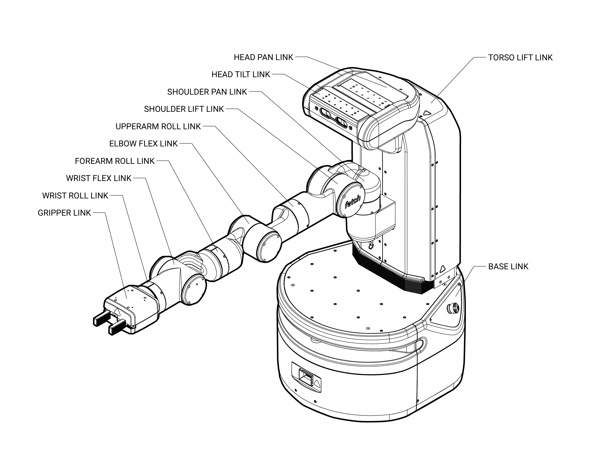
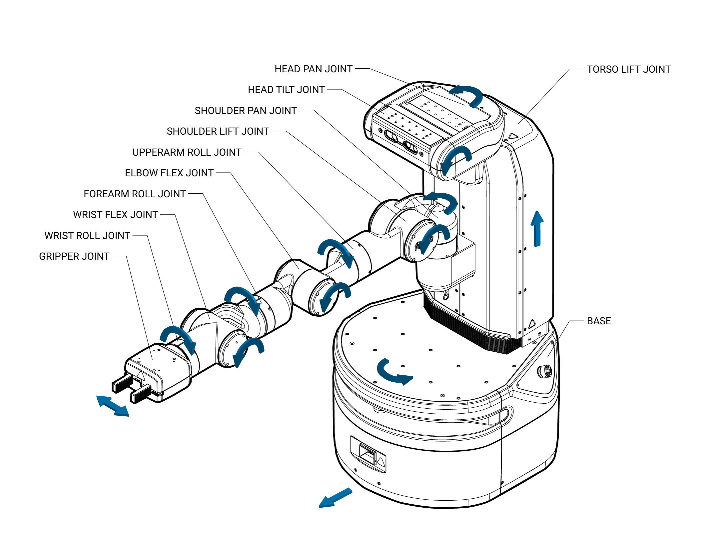
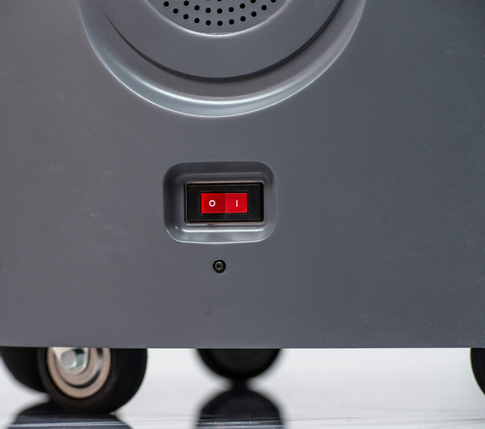
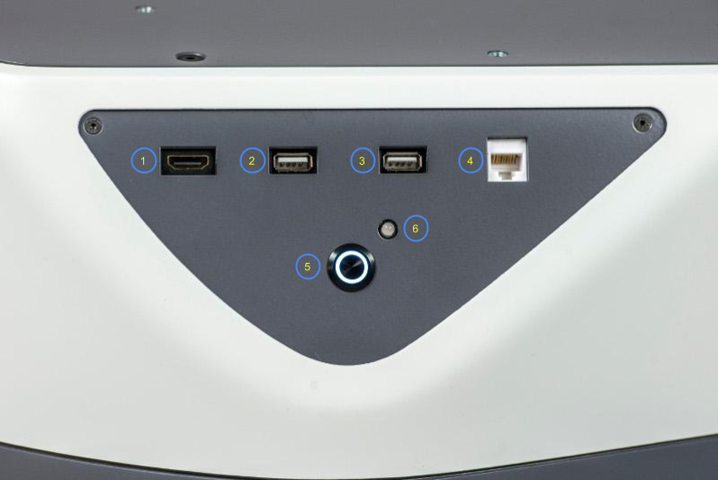
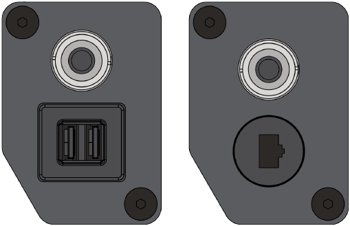

Robot Hardware Overview¶
Mechanism Terminology¶
The Fetch and Freight kinematics are defined by using the concepts of joints, links, and coordinate frames. The robot URDF (unified robot description format) model specifies the attributes (kinematic tree, names, ranges, etc.) of the joints, links, and frames of the robot. A link element in the URDF describes a rigid body with inertia, visual features, and coordinate frames. A joint element in the URDF defines the kinematics, dynamics, safety limits, and type (revolute, continuous fixed, prismatic, floating, or planar). Fixed joints are typically used to describe the relationship between two rigidly joined components in the robot.
Link¶
The links for the Fetch and Freight are defined in the URDF description that are located in the fetch_description or freight_description package respectively.
Frame¶
Frames represent the coordinate frames of links, detected objects, sensors, or the location of another robot in the world. Frames are define relative to other frames and the transformations between each frame is tracked using TF.
Joint¶
A joints define the relationship between links and are defined in the URDF description that can be found in the fetch_description or freight_description package respectively. In the Fetch and Freight the majority of the joints are rotational, the torso is prismatic, and there are several fixed joints describing the location of sensors within the robot. Rotational and translational joints are represented similarly in the URDF, and joint forces are described as effort instead of force or torque. Position, and velocity are both used to describe linear and angular motion of a joint.
Fetch Home Pose¶
The home pose of the Fetch robot is used to describe the joint positions in a consistent manner. The home pose is defined as the robot arm straight out in front of the robot with all x-axes aligned, the gripper in the closed position, and the x-axes of the head parallel and aligned with the arm, in this position all of the joints are considered to be zeroed. The calibration reference for most joints are not at the joint zero and the URDF of the Fetch contains the offsets for each joint.
Coordinate System¶
The coordinate frames for all links in the Fetch and Freight are defined with positive z-axis up, positive x-axis forward, and positive y-axis to the robot-left when Fetch is in the home pose. All joint angle conventions are chosen such that from the home pose, positive motion of the joint results in positive motion around a positive axis of a joint coordinate frame (i.e. right handed).
Naming Conventions¶
In general, the names for a link, a joint, and frame will be similar (e.g. shoulder_pan_link, shoulder_pan_joint, and shoulder_pan_frame). Short prefixes are used to describe the location of repeated components (i.e. drive wheels). The diagrams below show the link and joint naming conventions as well as the positive direction of joint motion.
{kind=link}

{kind=link}

Mechanical Overview¶
Do not operate Fetch or Freight before reviewing the mechanical information listed below.
Environmental¶
The Fetch and Freight Research Edition Robots are indoor laboratory robots. Operating outside this type of environment could cause damage to the Fetch and Freight robots, and injury or death to operators.
Drive Surface¶
The drive surface of the Fetch must be capable of supporting the entire weight of Fetch, about 250 lbs (113.3 kgs). If the surface is too soft, Fetch can get stuck and fail to drive. A commercial carpet or tile is recommended.
The drive surface of the Freight must be capable of supporting the entire weight of the Freight about 150 lbs (68 kgs) plus the weight of the payload. If the surface is too soft, Freight can get stuck and fail to drive. A commercial carpet or tile is recommended.
Incline Surface¶
Fetch and Freight are ready for ADA-compliant ramps, which are at no more than a 1/12 slope. Ramps that are steeper than a 1/12 slope are unsafe and may be a tipping hazard.
Water¶
Fetch and Freight have not been tested for any type of contact with water or any other liquid. Under no circumstances should Fetch nor Freight come in contact with water from rain, mist, ground water (puddles) and any other liquid. Water contact can cause damage to the electrical circuitry and the mechanism.
Temperature and Humidity¶
Fetch and Freight are designed to run in environments between 15C and 35C.
Keep Fetch and Freight away from open flames and other heat sources. Never use Fetch or Freight around stoves or ovens.
Forces and Torques¶
Joint position, velocity, and force limits are implemented in the Fetch and Freight URDF file as well as in firmware. Firmware implements additional power limits. These joint limits control the range of travel of the mechanism and the allowable velocity to prevent over-travel. These limits are enforced by the controller, and are designed to prevent poorly commanded control efforts from damaging the robot or harming operators.
The limits below are from the Fetch and Freight URDF files. If a velocity or torque limit is not specified, no value is enforced.
Joint |
Velocity |
Torque/Force |
Power |
|---|---|---|---|
“*”_wheel_joint |
17.4rad/s |
8.85Nm |
120W |
torso_lift_joint |
0.1m/s |
450N |
TBD |
head_pan_joint |
1.57rad/s |
0.32Nm |
TBD |
head_tilt_joint |
1.57rad/s |
0.68Nm |
TBD |
shoulder_pan_joint |
1.25rad/s |
33.82Nm |
TBD |
shoulder_lift_joint |
1.45rad/s |
131.76Nm |
TBD |
upperarm_roll_joint |
1.57rad/s |
76.94Nm |
TBD |
elbow_flex_joint |
1.52rad/s |
66.18Nm |
TBD |
forearm_roll_joint |
1.57rad/s |
29.35Nm |
TBD |
wrist_flex_joint |
2.26rad/s |
25.70Nm |
TBD |
wrist_roll_joint |
2.26rad/s |
7.36Nm |
TBD |
“*”_gripper_finger_joint |
0.05m/s |
60N |
– |
Joint Limits and Types¶
The position limits for Fetch and Freight are specified below. These “hard limits” are the maximum travel for the mechanism.
Joint |
Type |
Limit (+) |
Limit (-) |
|---|---|---|---|
“*”_wheel_joint |
continuous |
– |
– |
torso_lift_joint |
prismatic |
400mm |
0mm |
head_pan_joint |
revolute |
90° |
90° |
head_tilt_joint |
revolute |
90° (down) |
45° (up) |
shoulder_pan_joint |
revolute |
92° |
92° |
shoulder_lift_joint |
revolute |
87° |
70° |
upperarm_roll_joint |
continuous |
– |
– |
elbow_flex_joint |
revolute |
129° |
129° |
forearm_roll_joint |
continuous |
– |
– |
wrist_flex_joint |
revolute |
125° |
125° |
wrist_roll_joint |
continuous |
– |
– |
“*”_gripper_finger_joint |
prismatic |
50mm |
0mm |
Mount Points¶
Fetch and Freight both have mount points on top of the robot base. Fetch also has mount points on the head and gripper. The table below lists the fasteners that should be used and the max torques to use when installing fasteners. The spacing of the square grid of mount points is also included.
Location |
Fastener |
Max Torque |
Grid Spacing |
|---|---|---|---|
Base |
M5* |
3.6Nm |
50mm |
Head |
M4 |
3.0Nm |
25mm |
Gripper |
M3 |
0.50Nm (into the standoff) |
50mm |
Note
When mounting additional items on top of the base, a 6mm maximum thread engagement into the mounting holes must be maintained. Exceeding this maximum may cause the top plate of the base to deflect. On older robots, this depth may be limited to 4mm.
Gripper Modularity Interface¶
The gripper interface is modular, allowing the gripper to be replaced with alternate configurations. The gripper interface is based on an ISO mechanical standard, Ethernet communications and 24V power. For further details, contact Fetch Robotics for the Gripper Interface Specification document.
Electrical Overview¶
Internally, Fetch and Freight have a number of circuit boards, communication buses, and other components which handle power distribution and motion control. The system comprises:
The robot computer, running ROS, sends commands to the mainboard and gripper board over an Ethernet interface. This same Ethernet interface is used to communicate with the scanning laser range finder in the base of the robot. The
fetch_driverspackage provides an interface from the robot computer to the mainboard, and the default gripper.
The mainboard then communicates with the various motor controller boards (MCB) located throughout the robot. Communication with the MCBs is done over several half-duplex RS-485 buses. In addition to communications-related tasks, the mainboard also controls a number of electronic circuit breakers and also carries the charger circuitry which charges the batteries.
Each joint has a dedicated MCB with a dedicated microcontroller and an RS-485 connection. The arm MCBs all share one bus while all other MCBs share the other RS-485 bus. The microcontroller on each MCB is where the real-time control loops run.
{kind=link}
Fetch and Freight both have two 12V Sealed Lead Acid (SLA) batteries located in the robot base. The batteries are connected in series, providing the nominal 24V power rail for the robot. These batteries are kept charged by the mainboard (see Charging).
Breakers¶
There are several breakers within the robot. These are designed in order to prevent
damage to the robot if cabling should become worn or shorted out, or in the case
of sudden, unexpected overload of a joint. The table below describes each breaker,
using the names that are used in fetch_drivers and diagnostics:
Breaker Name |
Usage |
|---|---|
supply_breaker |
Limits current between the charging inlet and mainboard. |
battery_breaker |
Limits current between the mainboard and batteries. |
computer_breaker |
Limits current delivered to the robot computer. |
base_breaker |
Limits current delivered to base MCBs, as well as torso and head MCBs on Fetch. |
arm_breaker |
Limits current delivered to the MCBs located in the arm |
gripper_breaker |
Limits current delivered to the gripper. |
When a breaker is disabled or tripped, power will no longer flow to the connected devices. In the case of MCBs, this means that they will not be able to communicate with the mainboard.
{kind=link}
Power Disconnect Switch¶
The power disconnect is on the lower back of the robot. This switch cuts the power between the battery and the mainboard. It also acts as a breaker, limiting the total current that can be delivered by the batteries.
{kind=link}

Runstop¶
The runstop is used to stop all operation of the joints. It works by disabling the base, arm and gripper breakers. When the runstop is pressed, the drivers will not be able to communicate with the MCBs, and thus their position and other data will not update in RVIZ nor the runtime monitor.
Access Panel¶
Fetch and Freight both have an access panel with 2 USB, an Ethernet, and an HD Video port. All of these ports are connected directly to the onboard computer. In addition, Fetch has an extra USB port on the head.
{kind=link}

Item # |
Item Name |
|---|---|
1 |
HD Video Port |
2 |
USB Port 1 |
3 |
USB Port 2 |
4 |
Ethernet Port |
5 |
Power Button |
6 |
Charge Indicator Light |
The access panel is also the location of the power button which turns the robot on or off. This switch is connected to the mainboard and will only work if the power disconnect switch (the red one on the lower back of the robot) is in the ON position. Pressing the power button until it lights up with boot the robot, including the computer. To turn the robot off, press and hold the illuminated power button on the access panel until it starts blinking. The button will continue blinking until the computer has successfully shut down, and then power will be disconnected.
Freight Extensibility Interfaces¶
{kind=link}

In addition to the Access Panel, the Freight robot has one or two Extensibility Interfaces on the top for power and communications to custom payloads.
Since late 2021, Freight now has two sets of interfaces, and now exposes all of: power, ethernet, USB and aux runstop. (RS-485 is also available however is not presently supported software-wise for custom hardware attachments.)
Details on both versions are available in PDF form: Freight100 Extensibility Interface
Power can be controlled by enabling/disabling the associated breakers as described in Resetting Breakers.
Motion Control¶
Each joint has a dedicated motor controller board (MCB) with a dedicated microcontroller. The real-time components of the controls run on the MCBs, while the robot computer streams commands to the MCBs.
{kind=link}
All motors are brushless and each MCB runs an effort controller at 17.5kHz. Each MCB can also run an optional velocity controller which takes a desired velocity and outputs a control into the effort controller. Further, each MCB can run a position controller which can feed into the velocity controller. The position and velocity controllers each run at 1kHz, and the default rate for the commands streaming from the robot computer is 200Hz. Each MCB can then receive any of the following types of commands:
Desired position, desired velocity, and desired effort
Desired velocity and desired effort
Desired effort
Each MCB returns the measured effort, velocity and position of the joint it is controlling.
Most users will want to use the high-level Arm and Torso ROS API, however, users can also create their own controllers as ROS plugins that run on the robot computer and send commands to the MCBs using the robot_controllers_interface package.
Sensor Overview¶
Base Laser¶
Both Fetch and Freight have a SICK TIM571 scanning range finder. The laser has a range of 25m, 220° field of view, 15Hz update rate and angular resolution of 1/3°. The laser publishes both distance and RSSI (Received Signal Strength Indication) to the base_scan topic.
IMU¶
The mainboard of Fetch and Freight have a 6-axis inertial measurement unit (IMU). The gyroscope within the IMU is capable of measuring +/-2000 degrees per second, while the accelerometers are capable of measuring +/-2g. See IMU Interface for details on the ROS API.
Head Camera¶
Fetch has a Primesense Carmine 1.09 short-range RGBD sensor. This camera is best calibrated in the 0.35-1.4m range. See Head Camera Interface for details on the ROS API.
Gripper Sensors¶
In addition to the position and effort feedback of the gripper joint, the gripper incorporates a 6-axis inertial measurement unit (IMU). The gyroscope within the IMU is capable of measuring +/-2000 degrees per second, while the accelerometers are capable of measuring +/-2g. See IMU Interface for details on the ROS API.